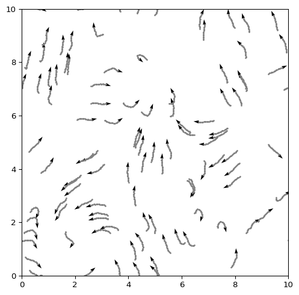
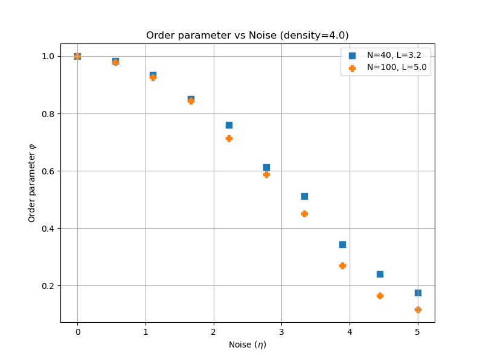
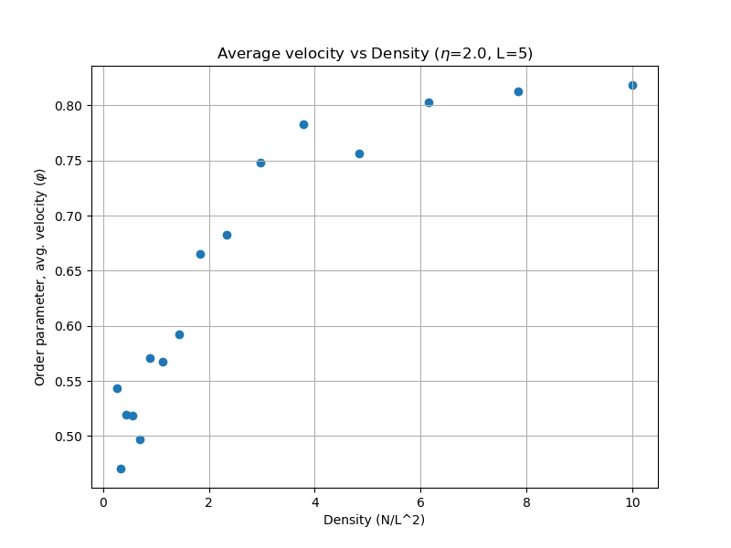

Vicsek Model
Collective Motion on a Box
The Vicsek model describes \(N\) self-propelled particles (boids) that align with neighbors within a radius \(r\), plus noise \(\eta\). Each particle has position \(\mathbf{x}_i(t)\) and heading \(\theta_i(t)\).
Initial State
Create the initial positions and headings. Positions are uniform on the box and headings are uniform on \([0, 2\pi]\).
def initialize_particles(num_boids, box_size):
# Random initial theta, shape (N)
theta =
# Random initial x, y - shape (2, N)
xy =
return xy, theta
Solved: Initialization (click to expand)
def initialize_particles(num_boids, box_size):
theta = np.random.uniform(0, 2 * np.pi, num_boids)
xy = np.random.uniform(0, box_size, (2, num_boids))
return xy, thetaTry out your function now. Vicsek used \(N \in [40, 10000]\) and \(L \in [3.0, 50.0]\) in his simulations. The more particles you have, the slower the simulation will be, so start with a small number like \(N=100\) and a box size of \(L=10\).
Motion
All boids have the same speed module \(v_0\), but their headings change based on neighbors. Every time step \(\Delta t\), each boid averages the headings of neighbors within radius \(r\) and adds noise \(\eta\). Then it moves in the new heading direction. This happens simultaneously to all boids. Follow the equations in (Vicsek et al. 1995) to implement the update step. We provide a summary here.
The positions of the \(i\)th particle is updated as:
\[ \mathbf{x}_i(t + \Delta t) = \mathbf{x}_i(t) + v_0 \Delta t \begin{bmatrix} \cos(\theta_i(t + \Delta t)) \\ \sin(\theta_i(t + \Delta t)) \end{bmatrix}. \tag{1}\]
Where \(v_0\) is the speed module, which Vicsek assumed to be \(v_0 = 0.03\) in his simulations.
It is important to remember that particles stay within the box. We will apply periodic boundary conditions, meaning that a particle that goes out of the box on one side reappears on the opposite side. Mathematically, we can implement this with the modulo operator, if we assume that the positions are in the range \([0, L]\):
\[ \mathbf{x}_i(t + \Delta t) = \mathbf{x}_i(t + \Delta t) \mod L, \tag{2}\]
Coming back to ?@eq-vicsek-xi, in order to compute the new positions, we need to compute the new heading \(\theta_i(t + \Delta t)\) as:
\[ \theta_i(t + \Delta t) = \langle \theta_j(t) \rangle_{j \in \mathcal{N}_i} + \frac{\eta}{2} \xi_i(t), \tag{3}\]
where \(\mathcal{N}_i\) is the set of neighbors within radius \(r\) of particle \(i\), \(\langle \cdot \rangle\) denotes the average angle, and \(\xi_i(t)\) is a random variable uniformly distributed in \([-1, 1]\). Vicsek used \(r = 1\) and \(\eta \in [0.0, 5.0]\) in his simulations.
Python Implementation
Before we jump into coding, it is good to outline the steps we need to take for each time step:
- For each particle \(i\), find its neighbors within radius \(r\).
- Compute the average heading of these neighbors.
- Add noise to the average heading to get the new heading \(\theta_i(t + \Delta t)\).
- Update the position of each particle based on its new heading.
- Apply periodic boundary conditions to ensure particles stay within the box.
For steps 1, we need to compare every particle with every other particle to compute distances. This can be done with nested loops or more efficiently with a distance matrix. For simplicity, start with the loop version. Once we know the distances, we can get all neighbors for each particle and compute the average heading. Finally, we add noise, following Equation 3.
# What we have:
xy # the positions of the particles, shape (2, N)
theta # the headings of the particles, shape (N)
noise # the noise level eta
# ----
num_boids = xy.shape[1] # N
# Loop over each particle
for i in range(num_boids):
# Initialize list to store neighbor headings
ls_theta_neighbors = []
# Loop over all other particles to find neighbors
for j in range(num_boids):
# TODO: Skip self comparison (i == j)
# TODO: Compute distance between particle i and j
# TODO: If distance is less than radius,
# add the heading of particle j to the list of neighbors
# After finding neighbors...
# TODO: Compute the average heading and add noise
# Result: updated theta for all particles
Solved: Update theta using loops (click to expand)
num_boids = xy.shape[1] # N
# Loop over each particle
for i in range(num_boids):
# Initialize list to store neighbor headings
ls_theta_neighbors = []
# Loop over all other particles to find neighbors
for j in range(num_boids):
# Skip self comparison
if i == j:
continue
# Compute distance between particle i and j
dist = np.linalg.norm(xy[:, i] - xy[:, j])
# If distance is less than radius,
# add the heading of particle j to the list of neighbors
if dist <= radius_interaction:
ls_theta_neighbors.append(theta[j])
# After finding neighbors
# Compute the average heading...
theta_new[i] = np.mean(ls_theta_neighbors)
# ...and add noise
theta_new[i] += noise * np.pi * np.random.uniform(-1, 1)Just with that, we have implemented steps 1-3. Now we can compute the new positions based on the new headings, following Equation 1.
# After updating theta for all particles
for i in range(num_boids):
# TODO: Compute velocity vector based on new heading
# TODO: Update position based on velocity and time step
# Result: updated xy for all particlesThere is a final step to apply periodic boundary conditions, following Equation 2.
# After updating positions for all particles
# TODO: Apply periodic boundary conditions to xy
# Result: updated xy with periodic boundaries::: {.callout-tip collapse=“true”} ## Solved: Update positions and apply periodic boundaries (click to expand)
# After updating theta for all particles
for i in range(num_boids):
# Compute velocity vector based on new heading
v = v0 * np.array([np.cos(theta_new[i]), np.sin(theta_new[i])])
# Update position based on velocity and time step
xy_new[:, i] = xy_new[:, i] + dt * v
# Apply periodic boundary conditions to xy
xy = np.mod(xy_new, box_size)
# We overwrite xy with the new positions after applying periodic boundariesDo you have it? Excellent! Last but not least, we can put everything together in a function that takes the current positions and headings and returns the updated positions and headings after one time step.
Solved: Vicsek equations, loop version (click to expand)
def vicsek_equations(xy, theta, dt=1.0, eta=0.1, box_size=10, radius_interaction=1, v0=0.03):
xy_new = xy.copy()
theta_new = theta.copy()
num_boids = len(theta)
for i in range(num_boids):
ls_theta_neighbors = []
for j in range(num_boids):
dist = np.linalg.norm(xy[:, i] - xy[:, j])
if dist <= radius_interaction:
ls_theta_neighbors.append(theta[j])
theta_new[i] = np.mean(ls_theta_neighbors)
theta_new[i] += eta * np.pi * np.random.uniform(-1, 1)
v = v0 * np.array([np.cos(theta_new[i]), np.sin(theta_new[i])])
xy_new[:, i] = xy_new[:, i] + dt * v
xy_new = np.mod(xy_new, box_size)
return xy_new, theta_newPython Implementation: Vectorized Version (Optional)
Loops are expensive. You can compute neighbor averages with a distance matrix.
def vicsek_equations(
xy: np.ndarray,
theta: np.ndarray,
noise: float = 0.1,
box_size: float = 25,
dt: float = 1,
radius_interaction: float = 1,
v0: float = 0.03,
) -> tuple[np.ndarray, np.ndarray]:
# TODO: Compute distance matrix and neighbor matrix
# Useful functions:
# scipy.spatial.distance.pdist
# scipy.spatial.distance.squareform
# TODO: Vectorized computation of average direction of neighbors (including itself)
# Useful functions: np.sin, np.cos, np.arctan2
# TODO: Add noise to the average heading
# Useful function: np.random.rand
# TODO: Update position based on new headings
# Useful functions: np.cos, np.sin
return xy_new, theta_new
Solved: Vicsek equations, vectorized version (click to expand)
def vicsek_equations(
xy: np.ndarray,
theta: np.ndarray,
noise: float = 0.1,
box_size: float = 25,
dt: float = 1,
radius_interaction: float = 1,
v0: float = 0.03,
) -> tuple[np.ndarray, np.ndarray]:
"""
Update the state of the particles based on the Vicsek model.
Parameters
----------
xy : np.ndarray
Position of the particles.
theta : np.ndarray
Angle of the particles.
noise : float, optional
Noise parameter, eta, default is 0.1.
box_size : float, optional
Dimension of the space, L, default is 25.
dt : float, optional
Time step, default is 1 [Vicsek1995]
radius_interaction : float, optional
Interaction radius, default is 1 [Vicsek1995]
v0 : float, optional
Speed of the particles, default is 0.03 [Vicsek1995]
Returns
-------
np.ndarray
Updated position of the particles.
np.ndarray
Updated angle of the particles.
"""
# Compute distance matrix and neighbor matrix
d_matrix = scipy.spatial.distance.pdist(xy.T)
d_matrix = scipy.spatial.distance.squareform(d_matrix)
neighbors = d_matrix <= radius_interaction
# Vectorized computation of average direction of neighbors (including itself)
num_boids = xy.shape[1]
sin_theta = np.sin(theta)
cos_theta = np.cos(theta)
# neighbors is (N, N), sin_theta/cos_theta is (N,)
# Broadcasting: (N, N) * (N,) -> (N, N)
sum_sin = neighbors @ sin_theta # (N,)
sum_cos = neighbors @ cos_theta # (N,)
count = neighbors.sum(axis=1) # (N,)
mean_sin = sum_sin / count
mean_cos = sum_cos / count
theta_avg = np.arctan2(mean_sin, mean_cos)
# Add noise: uniform in [-noise/2, noise/2]
noise_arr = noise * (np.random.uniform(size=num_boids) - 0.5)
theta_new = theta_avg + noise_arr
theta_new = np.mod(theta_new, 2 * np.pi)
# Update position
v = v0 * np.array([np.cos(theta_new), np.sin(theta_new)])
xy_new = xy + dt * v
# Periodic boundary conditions
xy_new = np.mod(xy_new, box_size)
return xy_new, theta_newOrder Parameter
The order parameter \(\varphi\) is defined as the magnitude of the average velocity vector normalized by the speed:
\[ \varphi(t) = \frac{1}{N v_0} \left|\sum_{i=1}^N v_0 \begin{bmatrix} \cos(\theta_i(t)) \\ \sin(\theta_i(t)) \end{bmatrix}\right| = \frac{1}{N} \left|\sum_{i=1}^N \begin{bmatrix} \cos(\theta_i(t)) \\ \sin(\theta_i(t)) \end{bmatrix}\right|. \tag{4}\]
We can compute this at each time step to see how the system evolves. In the disordered phase, \(\varphi \approx 0\) because the headings are random and cancel out. In the ordered phase, \(\varphi \approx 1\) because all particles align in the same direction.
def vicsek_order_parameter(xy: np.ndarray, theta: np.ndarray, v0: float = 0.03) -> float:
# TODO: Compute the order parameter phi based on the headings theta
return phi
Solved: Order parameter (click to expand)
def vicsek_order_parameter(theta: np.ndarray, v0: float = 0.03) -> float:
"""
Compute the normalized order parameter (mean velocity divided by v0), as in Vicsek et al. (1995).
"""
vx = v0 * np.cos(theta)
vy = v0 * np.sin(theta)
avg_vx = np.mean(vx)
avg_vy = np.mean(vy)
return float(np.sqrt(avg_vx**2 + avg_vy**2) / v0)Analysis
Let’s try to reproduce Figure 2 in the original paper (Vicsek et al. 1995), which shows the order parameter \(\varphi\) as a function of noise \(\eta\) for different densities \(\rho = N / L^2\). We can run simulations for different values of \(N\), \(L\), and \(\eta\), compute the order parameter at each time step, and then average it over time to get a single value for each combination of parameters.
For reference, here are the parameters used in the original paper for Figure 2(a):
- Number of particles \(N\): 40, 100, 400, 1000, 4000, 10000. I recommend starting with just the two smaller values (40 and 100) to see the behavior, and then you can try larger values if you want.
- Density \(\rho\): constant at 4.0
- Box size L: computed from density and number of particles, so \(L = \sqrt{N / \rho}\).
- Noise \(\eta\): try several values between 0.0 and 5.0

And here are the parameters for Figure 2(b):
- Density \(\rho\): try several values between 0.1 and 10.0. Higher values will take longer to compute, so once again I recommend starting with a few values like 0.1, 1.0, and 4.0.
- Box size \(L\): constant at 20.
- Number of particles \(N\): computed from density and box size, so \(N = \rho L^2\).
- Noise \(\eta\): constant at 2.0 (Vicsek did not specify the exact value, but it should be in the disordered phase)

References
References
Vicsek, Tamás, András Czirók, Eshel Ben-Jacob, Inon Cohen, and Ofer Shochet. 1995. “Novel Type of Phase Transition in a System of Self-Driven Particles.” Physical Review Letters 75 (6): 1226.